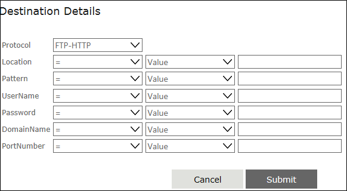

You can specify the details of the file destination in this property window. To open this window, click the button for the 'Destination Details' property.

This window has the Protocol drop down where you can select the file transfer protocol. Below this drop down, it has controls to specify the following details.
Protocol: If the selected protocol is FTP-HTTP, you can use FTP or HTTP protocol. For the HTTP protocol, you must enable the WebDAV Publishing feature for the web server. In the HTTP site, select the site, go to the Authentication Feature of the site, and ensure that only the Windows Authentication is enabled for the site.
Location: You can specify the URI/UNC of the file or directory here.
Pattern: You can specify the pattern to decide the file types to be transferred, such as *.doc,*.xls, in this field.
UserName: You can specify the user name for the destination here.
Password: You can specify the password for the destination here.
DomainName: You can specify the domain or computer name of the destination here.
PortNumber: You can specify the port number of the destination server.
Each of the above parameter fields has the following controls.
The Operator drop down - You can select the operator for the expression here. E.g., "="
The Value type drop down - You can select the type of value to assign to the parameter in the expression. You can specify Variable, Content, Value, or XMLVariables here.
The Value text box/drop down - You can specify the actual value to assign to the parameter. The control displayed depends on the option selected in the preceding drop down. If you had selected "Value", it will display a text box here. You can enter a discrete value in this box to complete the expression. If you had selected "Variable", "Content", or "XMLVariables" instead, there will be a drop down instead of the field. This drop down will have the variable collection or content collection or XMLVariables collection from which you can select an appropriate option.